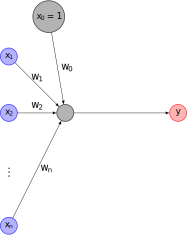
Recurrent neural networks
Per Unneberg
NBIS
2024-05-23
Recap
Perceptron (single neuron)
Architecture
A single neuron has \(n\) inputs \(x_i\) and an output \(y\). To each input is associated a weight \(w_i\).
Activity rule
The activity rule is given by two steps:
\[a = \sum_{i} w_ix_i, \quad i=0,...,n\]
\[\begin{array}{ccc} \mathrm{activation} & & \mathrm{activity}\\ a & \rightarrow & y(a) \end{array}\]
Perceptron (single neuron)
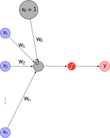
Architecture
A single neuron has \(n\) inputs \(x_i\) and an output \(y\). To each input is associated a weight \(w_i\).
Activity rule
The activity rule is given by two steps:
\[a = \sum_{i} w_ix_i, \quad i=0,...,n\]
\[\begin{array}{ccc} \mathrm{activation} & & \mathrm{activity}\\ a & \rightarrow & y(a) \end{array}\]
Perceptron (single neuron)
\[a = w_0 + \sum_{i} w_ix_i, \quad i=1,...,n\]
\[y = y(a) = g\left( w_0 + \sum_{i=1}^{n} w_ix_i \right)\]
or in vector notation
\[y = g\left(w_0 + \mathbf{X^T} \mathbf{W} \right)\]
where:
\[\quad\mathbf{X}= \begin{bmatrix}x_1\\ \vdots \\ x_n\end{bmatrix}, \quad \mathbf{W}=\begin{bmatrix}w_1\\ \vdots \\ w_n\end{bmatrix}\]
Simplified illustration and notation
Architecture
Vectorized versions: input \(\boldsymbol{x}\), weights \(\boldsymbol{w}\), output \(\boldsymbol{y}\)
Activity rule
\[a = \boldsymbol{wx}\]
Feed forward network
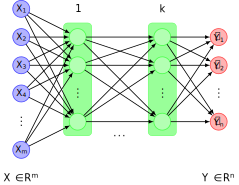
Simplified illustration
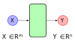
Simplified illustration
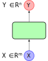
Sequential models
Motivation

Motivation
Motivation
Motivation
Sequences around us


Types of models
one to one
many to one
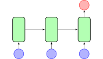
one to many
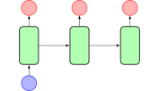
many to many
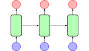
Image classification
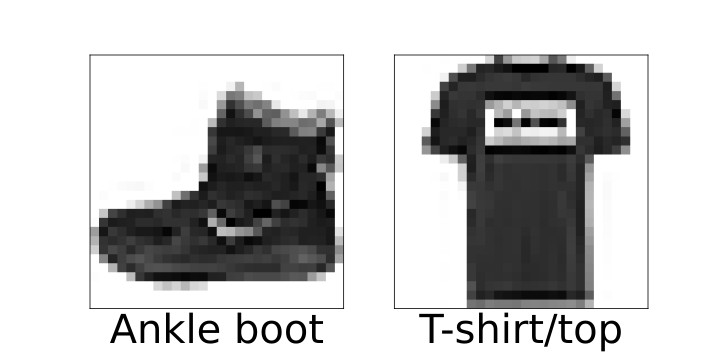
Sentiment analysis

Image captioning

Machine translation

Recurrent Neural Networks (RNNs)
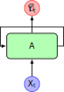
Feed forward network implementation to sequential data
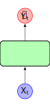
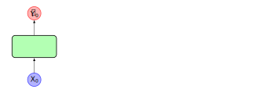
Assume multiple time points.
Feed forward network implementation to sequential data
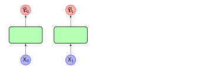
Assume multiple time points.
Feed forward network implementation to sequential data
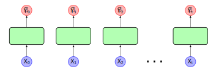
Assume multiple time points.
- Dependency of inputs not modelled \(\Rightarrow\) ambiguous sequences cannot be distinguished:
“dog bites man” vs “man bites dog”
Feed forward network implementation to sequential data
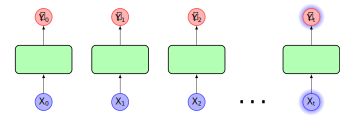
Assume multiple time points.
- Time points are modelled individually (\(\hat{Y}_t = f(X_t)\))
Feed forward network implementation to sequential data
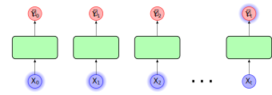
Assume multiple time points.
- Time points are modelled individually (\(\hat{Y}_t = f(X_t)\))
- However: also want dependency on previous inputs (\(\hat{Y}_t = f(..., X_1, X_0)\))
Adding recurrence relations
Adding recurrence relations
Adding recurrence relations
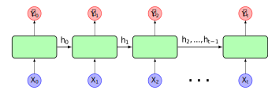
Adding recurrence relations
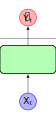
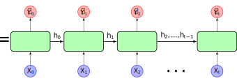
Folded representation
Unfolded representation
Add a hidden state \(h\) that introduces a dependency on the previous step:
\[ \hat{Y}_t = f(X_t, h_{t-1}) \]
\(h_t\) is a summary of the inputs we’ve seen sofar.
Sequential memory of RNNs
RNNs have what one could call “sequential memory” (Phi, 2020)
Alphabet
Exercise: say alphabet in your head
A B C … X Y Z
Modification: start from e.g. letter F
May take time to get started, but from there on it’s easy
Now read the alphabet in reverse:
Z Y X … C B A
Memory access is associative and context-dependent
Recurrent Neural Networks
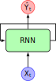
Add recurrence relation where current hidden cell state \(h_t\) depends on input \(x_t\) and previous hidden state \(h_{t-1}\) via a function \(f_W\) that defines the network parameters (weights):
\[ h_t = f_\mathbf{W}(x_t, h_{t-1}) \]
Note that the same function and weights are used across all time steps!
Recurrent Neural Networks - pseudocode
class RNN:
# ...
# Description of forward pass
def step(self, x):
# update the hidden state
self.h = np.tanh(np.dot(self.W_hh, self.h) + np.dot(self.W_xh, x))
# compute the output vector
y = np.dot(self.W_hy, self.h)
return y
rnn = RNN()
ff = FeedForwardNN()
for word in input:
output = rnn.step(word)
prediction = ff(output)Vanilla RNNs
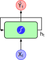
Output vector
\[ \hat{Y}_t = \mathbf{W_{hy}^T}h_t \]
Update hidden state
\[ h_t = \mathsf{tanh}(\mathbf{W_{xh}^T}X_t + \mathbf{W_{hh}^T}h_{t-1}) \]
Input vector
\[ X_t \]
Vanilla RNNs
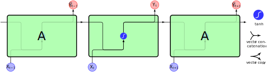Vanilla RNNs
Vanilla RNNs
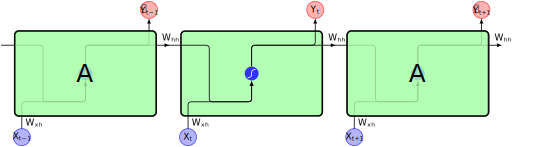Vanilla RNNs
Note: \(\mathbf{W_{xh}}\), \(\mathbf{W_{hh}}\), and \(\mathbf{W_{hy}}\) are shared across all cells!
Desired features of RNN
Shared weights (parameters) are a fundamental characteristic that among other things address:
1. Variable sequence lengths
Not all inputs are of equal length
2. Long-term memory
“I grew up in England, and … I speak fluent English”
3. Preservation of order
“dog bites man” != “man bites dog”
Exercise
Example: Box & Jenkins airline passenger data set

Example: generate test and training data

Example: prepare data for keras
Example: create vanilla RNN model
from keras.models import Sequential
from keras.layers import Dense, SimpleRNN
model = Sequential()
model.add(SimpleRNN(units=3, input_shape=(time_steps, 1),
activation="tanh"))
model.add(Dense(units=1))
model.compile(loss='mean_squared_error', optimizer='adam')
model.summary()Model: "sequential"
_________________________________________________________________
Layer (type) Output Shape Param #
=================================================================
simple_rnn (SimpleRNN) (None, 3) 15
dense (Dense) (None, 1) 4
=================================================================
Total params: 19 (76.00 Byte)
Trainable params: 19 (76.00 Byte)
Non-trainable params: 0 (0.00 Byte)
_________________________________________________________________Example: fit the model and evaluate


Example: model topology writ out
Model: "sequential"
_________________________________________________________________
Layer (type) Output Shape Param #
=================================================================
simple_rnn (SimpleRNN) (None, 3) 15
dense (Dense) (None, 1) 4
=================================================================
Total params: 19 (76.00 Byte)
Trainable params: 19 (76.00 Byte)
Non-trainable params: 0 (0.00 Byte)
_________________________________________________________________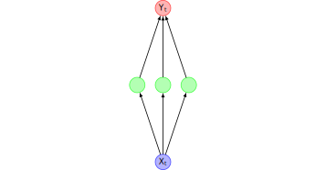
Example: model topology writ out
Model: "sequential"
_________________________________________________________________
Layer (type) Output Shape Param #
=================================================================
simple_rnn (SimpleRNN) (None, 3) 15
dense (Dense) (None, 1) 4
=================================================================
Total params: 19 (76.00 Byte)
Trainable params: 19 (76.00 Byte)
Non-trainable params: 0 (0.00 Byte)
_________________________________________________________________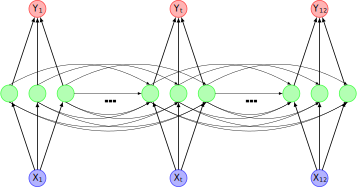
NB! In keras, RNN input is a 3D tensor with shape [batch, timesteps, feature]
An RNN in numbers
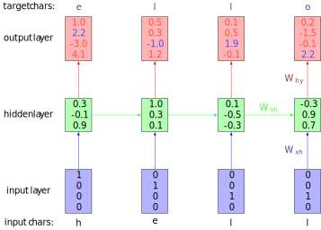Example network trained on “hello” showing activations in forward pass given input “hell”. The outputs contain confidences in outputs (vocabulary={h, e, l, o}). We want blue numbers high, red numbers low. P(e) is in context of “h”, P(l) in context of “he” and so on.
What is the topology of the network?
4 input units (features), 4 time steps, 3 hidden units, 4 output units
Exercise
Using the SimpleRNN (Vanilla RNN) class, see if you can improve the airline passenger model. Some things to try:
- change the number of units
- change time_steps
- change the number of epochs
Training
Recap: backpropagation algorithm in ffns
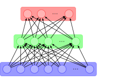
Recap: backpropagation algorithm in ffns
- perform forward pass and generate prediction
Recap: backpropagation algorithm in ffns
- perform forward pass and generate prediction
- calculate prediction error \(\epsilon_i\) wrt (known) output: \(\epsilon_i = \mathcal{L}(\hat{y}_i, y_i)\), loss function \(\mathcal{L}\)
Recap: backpropagation algorithm in ffns
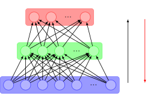
- perform forward pass and generate prediction
- calculate prediction error \(\epsilon_i\) wrt (known) output: \(\epsilon_i = \mathcal{L}(\hat{y}_i, y_i)\), loss function \(\mathcal{L}\)
- back propagate errors and update weights to minimize loss
Backpropagation through time (BPTT)
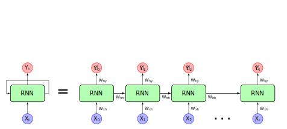
Backpropagation through time (BPTT)
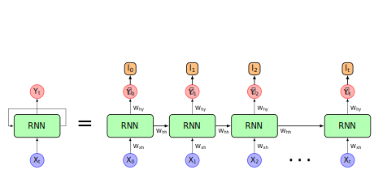
Backpropagation through time (BPTT)
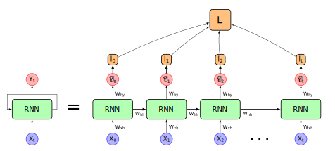
Backpropagation through time (BPTT)
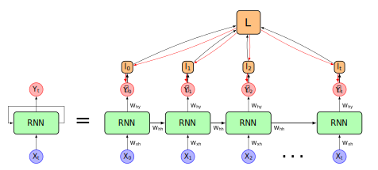
Backpropagation through time (BPTT)
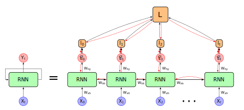
Backpropagation through time (BPTT)
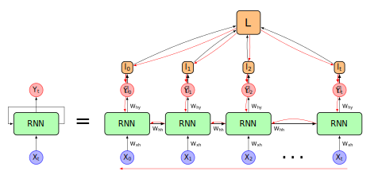
Errors are propagated backwards in time from \(t=t\) to \(t=0\).
Problem: calculating gradient may depend on large powers of \(\mathbf{W_{hh}}^{\mathsf{T}}\) (e.g., \(\delta\mathcal{L} / \delta h_0 \sim f((\mathbf{W_{hh}}^{\mathsf{T}})^t)\)
The effect of vanishing gradients on long-term memory
In layer \(i\) gradient size ~ \((\mathbf{W_{hh}}^{\mathsf{T}})^{t-i}\)
\(\downarrow\)
Weight adjustments depend on size of gradient
\(\downarrow\)
Early layers tend to “see” small gradients and do very little updating
\(\downarrow\)
Bias parameters to learn recent events
\(\downarrow\)
RNN suffer short term memory
Solutions to vanishing gradient
1. Activation function
ReLU (or leaky ReLU) instead of sigmoid or tanh.
Prevents small gradient: for \(\mathbb{x>0}\), gradient positive constant
Derivatives of \(\sigma\), \(\mathsf{tanh}\) and \(\mathsf{ReLU}\) activation functions.
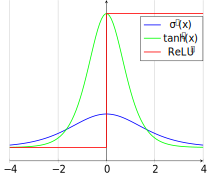
Solutions to vanishing gradient
2. Weight initialization
Set bias=0, weights to identity matrix
Solutions to vanishing gradient
3. More complex cells using “gating”
For example LSTM. Idea is to control what information is retained within each RNN unit.
Make use of regular multiplication (x) and addition (+) to combine signals.

LSTMs and GRUs
Motivation behind LSTMs and GRUs
LSTM
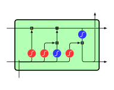
GRU
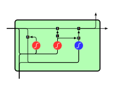
Long Short Term Memory (LSTM) (Hochreiter & Schmidhuber, 1997) and Gated Recurrent Unit (GRU) (Cho et al., 2014) architectures were proposed to solve the vanishing gradient problem.
Intuition
In this paper, we propose a novel neural network model called RNN Encoder-Decoder that consists of two recurrent neural networks (RNN). One RNN encodes a sequence of symbols into a fixed-length vector representation, and the other decodes the representation into another sequence of symbols. The encoder and decoder of the proposed model are jointly trained to maximize the conditional probability of a target sequence given a source sequence. The performance of a statistical machine translation system is empirically found to improve by using the conditional probabilities of phrase pairs computed by the RNN Encoder-Decoder as an additional feature in the existing log-linear model. Qualitatively, we show that the proposed model learns a semantically and syntactically meaningful representation of linguistic phrases.
Learning Phrase Representations using RNN Encoder-Decoder for Statistical Machine Translation (Cho et al., 2014)
Intuition
In this paper, we propose a novel neural network model called RNN Encoder-Decoder that consists of two recurrent neural networks (RNN). One RNN encodes a sequence of symbols into a fixed-length vector representation, and the other decodes the representation into another sequence of symbols. The encoder and decoder of the proposed model are jointly trained to maximize the conditional probability of a target sequence given a source sequence. The performance of a statistical machine translation system is empirically found to improve by using the conditional probabilities of phrase pairs computed by the RNN Encoder-Decoder as an additional feature in the existing log-linear model. Qualitatively, we show that the proposed model learns a semantically and syntactically meaningful representation of linguistic phrases.
Learning Phrase Representations using RNN Encoder-Decoder for Statistical Machine Translation (Cho et al., 2014)
Remember the important parts, pay less attention to (forget) the rest.
LSTM: Cell state flow and gating
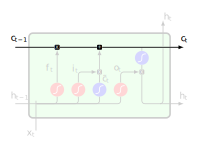
LSTM adds cell state that in effect provides the long-term memory
Information flows in the cell state from \(c_{t-1}\) to \(c_t\).
Gates affect the amount of information let through. The sigmoid layer outputs anything from 0 (nothing) to 1 (everything).
In our preliminary experiments, we found that it is crucial to use this new unit with gating units. We were not able to get meaningful result with an oft-used tanh unit without any gating.
Forget, input, and output gates
forget gate
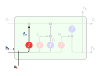
Purpose: reset content of cell state
input gate
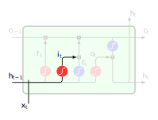
Purpose: decide when to read data into cell state
output gate
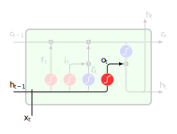
Purpose: read entries from cell state
Sigmoid squishes vector \([\boldsymbol{h_{t-1}}, \boldsymbol{x_t}]\) (previous hidden state + input) to \((0, 1)\) for each value in cell state \(c_{t-1}\), where 0 means “reset entry”, 1 “keep it”
The forget gate
Purpose: decide what information to keep or throw away
Sigmoid squishes vector \([\boldsymbol{h_{t-1}}, \boldsymbol{x_t}]\) (previous hidden state + input) to \((0, 1)\) for each value in cell state \(c_{t-1}\), where 0 means “forget entry”, 1 “keep it”
\[ f_t = \sigma(W_f \cdot [h_{t-1}, x_t] + b_f) \]
Add new information - the input gate
Two steps to adding new information:
- sigmoid layer decides which values to update
Add new information - get candidate values
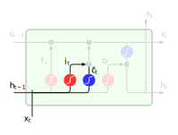
Two steps to adding new information:
- sigmoid layer decides which values to update
- tanh layer creates vector of new candidate values \(\tilde{c}_t\)
\[ i_t = \sigma (W_i \cdot [h_{t-1}, x_t] + b_i)\\ \tilde{c}_t = \mathsf{tanh}(W_c \cdot [h_{t-1}, x_t] + b_c) \]
Updating the cell state
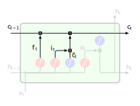
- multiply old cell state by \(f_t\) to forget what was decided to forget
- add new candidate values scaled by how much we want to update them \(i_t * \tilde{c}_t\)
\[ c_t = f_t * c_{t-1} + i_t * \tilde{c}_t \]
Cell output
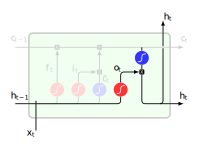
Output is filtered version of cell state.
- sigmoid output gate decides what parts of cell state to output
- push cell state through tanh and multiply by sigmoid output
\[ o_t = \sigma(W_o [h_{t-1}, x_t] + b_o)\\ h_t = o_t * \mathsf{tanh}(c_t) \]
LSTM: putting it together
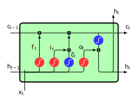Intuition
- if forget ~ 1, input ~ 0, \(c_{t-1}\) will be saved to next time step (input irrelevant for cell state)
- if forget ~ 0, input ~ 1, pay attention to the current input
LSTM: putting it together
\[ f_t = \sigma(W_f \cdot [h_{t-1}, x_t] + b_f)\\ i_t = \sigma (W_i \cdot [h_{t-1}, x_t] + b_i)\\ \tilde{c}_t = \mathsf{tanh}(W_c \cdot [h_{t-1}, x_t] + b_c)\\ c_t = f_t * c_{t-1} + i_t * \tilde{c}_t\\ o_t = \sigma(W_o [h_{t-1}, x_t] + b_o)\\ h_t = o_t * \mathsf{tanh}(c_t) \]
\[ x_t \in \mathbb{R}^{n\times d}, h_{t-1} \in \mathbb{R}^{n \times h}, i_t \in \mathbb{R}^{n\times h}, f_t \in \mathbb{R}^{n\times h}, o_t \in \mathbb{R}^{n\times h}, \\ c_t \in \mathbb{R}^{n\times h}, b_i,b_f,b_c \in \mathbb{R}^{1\times h} \]
and
\[ W_f \in \mathbb{R}^{n \times (h+d)}, W_i \in \mathbb{R}^{n \times (h+d)}, W_o \in \mathbb{R}^{n \times (h+d)}, W_c \in \mathbb{R}^{n \times (h+d)} \]
GRU
- forget and input states combined to single update gate
- merge cell and hidden state
- simpler model than LSTM
Concluding remarks
Example applications in genomics

Limitations of recurrent neural networks
- Encoding bottleneck
- How to represent (embed) and compress data?
- Slow and difficult to parallelize
- Slow convergence
- Sequential nature not well adapted for parallelization
- Short memory
- Don’t scale to sequences > thousands of time steps
Attention is all you need
The dominant sequence transduction models are based on complex recurrent or convolutional neural networks in an encoder-decoder configuration. The best performing models also connect the encoder and decoder through an attention mechanism. We propose a new simple network architecture, the Transformer, based solely on attention mechanisms, dispensing with recurrence and convolutions entirely. Experiments on two machine translation tasks show these models to be superior in quality while being more parallelizable and requiring significantly less time to train. Our model achieves 28.4 BLEU on the WMT 2014 English-to-German translation task, improving over the existing best results, including ensembles by over 2 BLEU. On the WMT 2014 English-to-French translation task, our model establishes a new single-model state-of-the-art BLEU score of 41.8 after training for 3.5 days on eight GPUs, a small fraction of the training costs of the best models from the literature. We show that the Transformer generalizes well to other tasks by applying it successfully to English constituency parsing both with large and limited training data.
Transformers
- process sequential input data (e.g., natural language)
- process entire input at once
- apply attention mechanism to provide positional context
Transformers were introduced in 2017 by a team at Google Brain and are increasingly the model of choice for NLP problems, replacing RNN models such as long short-term memory (LSTM). The additional training parallelization allows training on larger datasets
Summary
- Sequential data can be modelled with RNNs
- Recurrence to model sequences
- Training with back-propagation through time
- Gated units (LSTM, GRU) partially solve the vanishing gradient problem
- Transformers model sequences without recurrence and have increasingly become the model of choice for many natural language processing (NLP) problems
Exercise
Analyse airline passengers with LSTM
Modify the airline passenger model to use an LSTM and compare the results. Try out different parameters to improve test predictions.
Language models
Write like Jane Austen
Make a language model based on a text corpus consisting of all Jane Austen’s books.
Promoter prediction
Make a model to predict promoter regions in DNA sequences.
Bibliography
Adrion, J. R., Galloway, J. G., & Kern, A. D. (2020). Predicting the Landscape of Recombination Using Deep Learning. Molecular Biology and Evolution, 37(6), 1790–1808. https://doi.org/10.1093/molbev/msaa038
Alexander Amini. (2021). MIT 6.S191: Recurrent Neural Networks. https://www.youtube.com/watch?v=qjrad0V0uJE
Cho, K., Merrienboer, B. van, Gulcehre, C., Bahdanau, D., Bougares, F., Schwenk, H., & Bengio, Y. (2014). Learning Phrase Representations using RNN Encoder-Decoder for Statistical Machine Translation. arXiv:1406.1078 [Cs, Stat]. http://arxiv.org/abs/1406.1078
Herzen, J., Lässig, F., Piazzetta, S. G., Neuer, T., Tafti, L., Raille, G., Pottelbergh, T. V., Pasieka, M., Skrodzki, A., Huguenin, N., Dumonal, M., Kościsz, J., Bader, D., Gusset, F., Benheddi, M., Williamson, C., Kosinski, M., Petrik, M., & Grosch, G. (2021). Darts: User-friendly modern machine learning for time series. https://arxiv.org/abs/2110.03224
Hochreiter, S., & Schmidhuber, J. (1997). Long Short-Term Memory. Neural Computation, 9(8), 1735–1780. https://doi.org/10.1162/neco.1997.9.8.1735
Karpathy, Andrej. (2015). The Unreasonable Effectiveness of Recurrent Neural Networks. https://karpathy.github.io/2015/05/21/rnn-effectiveness/
MacKay, D. J. C. (2003). Information Theory, Inference and Learning Algorithms (Illustrated edition). Cambridge University Press.
Olah, C. (2015). Understanding LSTM Networks – colah’s blog. http://colah.github.io/posts/2015-08-Understanding-LSTMs/
Onnen, H. (2021). Temporal Loops: Intro to Recurrent Neural Networks for Time Series Forecasting in Python. In Medium. https://towardsdatascience.com/temporal-loops-intro-to-recurrent-neural-networks-for-time-series-forecasting-in-python-b0398963dc1f
Phi, M. (2020). Illustrated Guide to Recurrent Neural Networks. In Medium. https://towardsdatascience.com/illustrated-guide-to-recurrent-neural-networks-79e5eb8049c9
Shen, Z., Bao, W., & Huang, D.-S. (2018). Recurrent Neural Network for Predicting Transcription Factor Binding Sites. Scientific Reports, 8(1), 15270. https://doi.org/10.1038/s41598-018-33321-1
Transformer (machine learning model). (2023). Wikipedia. https://en.wikipedia.org/w/index.php?title=Transformer_(machine_learning_model)&oldid=1144198335
Vaswani, A., Shazeer, N., Parmar, N., Uszkoreit, J., Jones, L., Gomez, A. N., Kaiser, L., & Polosukhin, I. (2017). Attention Is All You Need (arXiv:1706.03762). arXiv. https://doi.org/10.48550/arXiv.1706.03762
Verma, S. (2021). Understanding Input and Output shapes in LSTM Keras. In Medium. https://shiva-verma.medium.com/understanding-input-and-output-shape-in-lstm-keras-c501ee95c65e
Zhang, A., Lipton, Z. C., Li, M., & Smola, A. J. (2021). Dive into deep learning. arXiv Preprint arXiv:2106.11342.
Recurrent neural networks